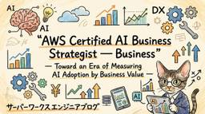
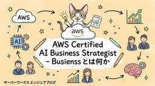
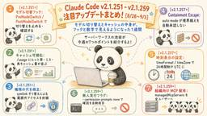
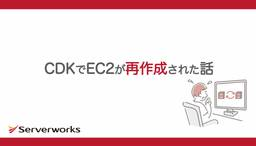
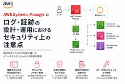
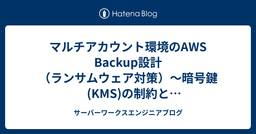

サーバーワークスエンジニアブログ
https://blog.serverworks.co.jp/
AWSトップエンジニア数「AI」「セキュリティ」部門で国内No.1のサーバーワークスのエンジニアが、AWSに関する技術情報をお届けします。
フィード

（検証したものの実際に確認できていません）Amazon ECS の「ゾンビノード」問題と、新しく発表された AGENT_CONNECTIVITY。 — 何が解決されるのか、これまでどうだったのか
サーバーワークスエンジニアブログ
こんにちは😺 アプリケーションサービス部の山本です。 いつも読んでいただき、ありがとうございます。 前提: ECS エージェントとコントロールプレーンの役割 3つの構成要素 起動タイプによる違い 本記事で最も重要な性質 解決対象の問題: ゾンビノード これまでどうだったのか 接続断を知る信号は従来から存在した（ECS on EC2） agentConnected は正常時にも false となる AWS 自身が判定ロジックを含む構成を提供していた 切断状態のインスタンスを終了すると登録が残存する（ECS on EC2） overallStatus にも別の盲点があった Fargate ではどう…
10時間前

"AWS Certified AI Business Strategist ― Business" ― Toward an Era of Measuring AI Adoption by Business Value
サーバーワークスエンジニアブログ
Introduction What Is AWS Certified AI Business Strategist - Business? A Recommended Learning Path Reflections from the Author On the new "Business" category itself. On whether the field really sees a gap — "engineers understand the tech, but the ROI and governance vocabulary doesn't land with execut…
14時間前

「AWS Certified AI Business Strategist - Business」― AI導入をビジネス価値で測る時代へ
サーバーワークスエンジニアブログ
はじめに AWS Certified AI Business Strategist - Businessとは何か おすすめの学習パス 考察：AI推進の現場から このBusiness資格をどう見るか 現場で「技術は分かるが、ROIやガバナンスの語彙が経営層と噛み合わない」という課題を感じることはあるか 誰が取ると効果的か まとめ はじめに AWSが新しい認定資格「AWS Certified AI Business Strategist - Business（AIB-C01）」を発表しました。2026年9月1日にベータ試験の登録が始まり、9月29日から受験が可能になります。コーディングやAWS実装…
14時間前

RDS スナップショット復元時の Lazy Loading に対するウォームアップはどれほど効果的なのか
サーバーワークスエンジニアブログ
こんにちは。テクニカルサポート課の森本です。 先月、RDS がスナップショットからストレージを復元した際の初期化ステータスを可視化するアップデートがリリースされました。 Amazon RDS がストレージボリュームの初期化ステータスを可視化 - AWS スナップショットから復元直後に Lazy Loading (遅延読み込み) が発生するというのは何となく知っていても、実際にどのくらい遅いのか、ウォームアップ (全テーブルスキャン) でどのくらい改善するのか、数字で見た経験がある方は少ないのではないでしょうか。今回は約 100GB のデータを用意して、ウォームアップの有無で挙動がどう変わるのか…
19時間前

Claude Code更新 モデル切替フック・キャッシュ可視化【8/28〜9/3】
サーバーワークスエンジニアブログ
はじめに サーバーワークスの池田です。 今週（8/28〜9/3）のClaude Codeは、v2.1.251からv2.1.259まで5バージョンが公開されました（v2.1.253〜v2.1.256はnpmとGitHub Releasesのいずれにも出ていません）。モデル切り替えに介入できるフックや、プロンプトキャッシュの実績を数字で見る手段など、長時間の自動運用を支える機能が中心の1週間でした。 なお、v2.1.260が9月3日にnpmへ公開されていますが、執筆時点では公式CHANGELOGとGitHub Releasesのいずれにも記載がないため、本記事では扱いません。 この記事で分かること…
2日前
Kiro CLI のヘッドレスモードで Renovate の PR を要約させてみた
サーバーワークスエンジニアブログ
Kiro CLIのヘッドレスモードを使ったGitHub Actionsの実装事例。RenovateのPRを自動で要約し、PRコメントとして投稿します。利用手順や実装のポイントを詳しく解説。
3日前

Kiro Web が 一般提供開始！5つの Kiro、使い分けを整理してみた
サーバーワークスエンジニアブログ
今月誕生日の人、おめでとうございます🎉 エデュケーショナルサービス課の森純子です。 2026年9月1日に Kiro Web が GA（Generally Available、一般提供）しました🎉 Kiro Web Is Now Generally Available（kiro.dev changelog、2026年9月1日）: kiro.dev 気づけば、Kiro には IDE・CLI・Web・Mobile・Crew と入口がどんどん増えていて、「何をしたい時に、どれを使えばいいのかしら...」とふと思いましたので、公式情報をもとに整理してみました。 本記事の登場サービス 対象読者 本記事で分…
4日前
デザインのUIモックアップを仕様にする開発フローで仕様駆動開発を高速化する 3
3
サーバーワークスエンジニアブログ
AIの進化で少人数でも可能に！7人での3システム開発が成功した実力派チームの開発フローレポート。動くUIモックアップにより合意形成と情報共有が劇的に向上。
4日前

AWS CDKで変更していないAmazon EC2インスタンスが再作成された話
サーバーワークスエンジニアブログ
1. はじめに 最近、塩にハマっている公森（コウモリ）です。 あるプロジェクトで、AWS CDK（以下、CDK）で小さな変更をデプロイした際、今回のコード変更では触れていないAmazon EC2インスタンスが再作成されるという出来事がありました。 原因を調べる中で、外部から取得している値が変わることでリソースが置き換わる場合があるとわかりました。 そこで本記事では、この経験をもとに次の3点を解説します。 NATインスタンスが再作成されたと考えられる仕組み デプロイ前に変更を確認する方法 CDKのデプロイによる変化とは別に注意すべき箇所 2. WAFだけ変えたのにNATインスタンスが再作成された…
4日前
オーバーレイIPによるフェイルオーバーを実装してみた
サーバーワークスエンジニアブログ
EC2 Active-Standby構成でオーバーレイIPによるフェイルオーバーを実装してみた 過去に提案したActive/Standby構成です。 結局実現することは無かったですがナレッジ及び供養として本稿に記載します。 いつか誰かのお役に立てれば幸いです。 対象としている読者 Active/Standbyの2台構成EC2サーバをオンプレからAWSへ移行検討している。 上記を検討しているが予算や会社ルールの都合でクラスター向けのアプライアンス機器を導入できない。 フェイルオーバとフェイルオーバ後の切り戻しをシンプルにしたい。 ENIを付け替えることでActive/StandbyのEC2を実現…
4日前
ECR レプリケーションとは何か、そしてルール上限 25 で何が変わるのか
サーバーワークスエンジニアブログ
ECR レプリケーションとは何か プルスルーキャッシュとの違い どういうときに使うのか ユースケース 1：マルチリージョンでの pull レイテンシ削減 ユースケース 2：マルチアカウントへの配布 ユースケース 3：リージョン障害への備え 使わないほうがいいケース：昇格（promotion） ルールの構造 1 つのルールに宛先を複数書く ルール数と宛先数は別の数字 今回のアップデートで何が変わるのか そもそもルールは何本必要になるのか パターンが 10 を超えるとどうなるか 旧上限での回避策と、その副作用 フィルタを増やしても、配布先は変えられない だから名前を変えてもルールは減らない 回避策…
4日前
AIエージェント時代の"XX駆動開発"を棚卸ししてみた話（後編）
サーバーワークスエンジニアブログ
DDD、BDD、TDD、FDD、MDD、SDD、DocDDなど、聞き慣れない"駆動開発"を比較表で棚卸しした記事です。前編で見たAI-DLCという大枠の中で、SDDがどんな役割を果たすのか、TDDやDocDDとの関係はどこまで公式に確認できるのかを整理したうえで、業務での使い分けの考え方や陥りやすい落とし穴についてもまとめています。自分のプロジェクトにどの手法を取り入れるべきか迷っている方向けの内容です。
4日前
AIエージェント時代の"XX駆動開発"を棚卸ししてみた話（前編）
サーバーワークスエンジニアブログ
AWSが提唱する「AI-DLC」という方法論について、公式ブログを調べながら整理した記事です。AI支援開発・AI自律開発という従来の2パターンとの違いから、Inception・Construction・Operationsという3つのフェーズ構造、そしてすべての活動を貫く計画・確認・承認・実行のループまで、AI-DLCの立ち位置と仕組みをまとめています。SDDやTDDとの関係を知る前に、まずAI-DLCそのものを理解したい方向けの内容です。
4日前

AWS Systems Manager のログ・証跡の設計・運用におけるセキュリティ上の注意点
サーバーワークスエンジニアブログ
こんにちは！イーゴリです。 AWS Systems Manager（SSM）及びSSMのジャストインタイムノードアクセス（JIT）機能を導入する際、ログ・証跡の設計で意外と見落とされがちなポイントがあります。特に Port Forwarding や SSH over SSM を使う場合の挙動は、想定外の動作をするケースがあります。 本記事では、接続方式ごとのログ記録の仕組みと、SSM及びSSM JIT（ジャストインタイムノードアクセス） 一時クレデンシャルとの関係について整理します。 SSM セッションの種類とログ記録の仕組み 接続方式別のログ記録一覧 Fleet Manager RDP につ…
4日前
Claude Code スラッシュコマンド早見表 2026 年 9 月版
サーバーワークスエンジニアブログ
Claude Code スラッシュコマンド早見表 こんにちは、サーバーワークスで生成AIの活用推進を担当している針生です。 Claude Code はアップデートが頻繁で、追加されたコマンドを整理しきれていませんでした。新しいコマンドが増えたことは知っていても、/ メニューを開いたときに、名前だけでは用途を判断しにくいものが少なくありませんでした。 そこでこの記事では、公式のコマンドリファレンスをもとに、Claude Code に同梱されているコマンドを用途別に並べ直します。自分用の記録ですが、同じように整理しきれていない方の役にも立てば嬉しいです。2026 年 9 月 2 日時点の確認環境は…
5日前
【初学者向け】Claude Code CLI と superpowers プラグインで何が変わる？導入から基本操作まで解説
サーバーワークスエンジニアブログ
はじめに Claude Code CLI と superpowers とは？ 1. Claude Code CLI とは 2. superpowers プラグインとは 3. 従来の開発・一般的なAIツールとの違い インストールと事前準備 事前準備 1. Claude Code CLI のインストール 2. superpowers プラグインの追加 実際に操作してみよう 1. 作業用フォルダを作成する 2. 指示（プロンプト）を出してみる 3. superpowers の動きを見てみる 4. 完成した成果物の確認 おわりに はじめに こんにちは、椎名です。現在、新卒研修の一環として様々な部署でO…
5日前
New RelicのNerdGraphでEC2のメタ情報をCSV出力するツールを作った話
サーバーワークスエンジニアブログ
New RelicのNerdGraph（GraphQL API）を使って、EC2インスタンスのメタ情報をCSVに出力するツールを作った際の記録です。AWSコンソールやOSへのログインを都度行わなくても、New Relicにすでに送られている監視データからEC2のインスタンスID・IPアドレス・リージョンなどの情報を一括取得する方法を紹介します。あわせて、User keyとLicense keyの使い分けや、クエリを変更すればEC2以外のリソースにも応用できる点についても触れています。
5日前
CloudWatch アラームの warm-up period で起動直後の誤発報を止めてみた
サーバーワークスエンジニアブログ
今月誕生日の人、おめでとうございます🎉 エデュケーショナルサービス課の森純子です。 新しいEC2やサービスを立ち上げた直後、まだメトリクスが出ていないのにアラームがデータ不足で発報してしまった。そんな経験をお持ちの方は少なくないと思いますが、2026年9月1日のアップデートで、Amazon CloudWatch のアラームに warm-up period（ウォームアップ期間）を設定できるようになりました🎉 Amazon CloudWatch now supports warm-up periods for alarms（2026年9月1日） warm-up period は、アラームを作成・更…
6日前
Amazon Bedrock AgentCore HarnessをAmazon EventBridge Scheduler、AWS Step Functionsを使い実行する
サーバーワークスエンジニアブログ
はじめに こんにちは。日本スピッツを飼っている深瀬です。白モフに日々癒されています。 前回の記事では、Amazon Bedrock AgentCore Harnessを使い、コンソールの「ハーネスをテスト」画面から手動でエージェントを呼び出し、ネットワーク構成図を生成できることを確認しました。 今回はAmazon EventBridge SchedulerとAWS Step Functionsを組み合わせ、Amazon Bedrock AgentCore Harnessを実行できるかを検証します。 料金 今回追加で発生するのはStep FunctionsとEventBridge Schedul…
6日前

AWS Network FirewallのドメインリストルールグループをSuricata互換形式へ置き換えた話
サーバーワークスエンジニアブログ
クロスインダストリー第1本部の京極です。 皆さん、AWS Network Firewallは使っていますか！ 最近は、Transit GatewayとAWS Network Firewallをよく触る機会に恵まれている私ですが、とあるプロジェクトでAWS Network Firewallルール形式の変更を検討する機会がありました。 今回は AWS Network Firewallのルールを標準形式ルールからSuricata互換形式への切り替えにおいて、 Suricata互換形式の使い方 標準形式ルールからの切り替え の2つを検証してみましたのでご紹介します！ この記事で書いていること 前提とな…
6日前

ALB のラウンドロビンは「どこ」で行われるのか
サーバーワークスエンジニアブログ
こんにちは😺アプリケーションサービス部の山本です。 いつも読んでくださり、ありがとうございます！ ALB のラウンドロビンは「どこ」で行われるのか 前提：load balancer node とは 結論：振り分け先は 2 か所で決まる 1. ① どの load balancer node に届くのか node は AZ ごとに 1 つ、ではない どの IP を使うかを決めるのはクライアント DNS 応答に載るのは最大 8 個 Route 53 はどこに登場するのか 2. ② node の中で何が起きるのか ターゲット選択は 2 段構え ラウンドロビンの定義 他のアルゴリズムと注意点 3. クロ…
6日前
Aurora DSQL で外部キー制約がついに使えるようになったので ON DELETE の挙動を全部試してみた
サーバーワークスエンジニアブログ
はじめに この記事で学べること 前提知識・条件 外部キー制約と参照アクションのおさらい やってみた 準備：親テーブルの準備 ON DELETE RESTRICT（削除をブロック） ON DELETE NO ACTION（デフォルト。違反ならエラー） DEFERRABLE INITIALLY DEFERRED でチェックを遅らせてみる ON DELETE CASCADE（子も一緒に削除） ON DELETE SET NULL（参照列を NULL に） ON DELETE SET DEFAULT（参照列をデフォルト値に） Aurora DSQL 特有の注意点 CASCADE / SET NULL …
6日前
NLBのセキュリティグループ参照でつまずいた話
サーバーワークスエンジニアブログ
AWSのNetwork Load Balancer（NLB）構築におけるセキュリティグループの設定方法を、初心者向けに解説。IPアドレス指定とセキュリティグループ参照の違いや、クライアントIP保持を有効にした場合の通信の許可について深掘りします。
7日前

draw.ioの出力形式「Embedded XML in PNG」とはなにか？仕組みと仕様を調べてみた
サーバーワークスエンジニアブログ
はじめに 「Embedded XML in PNG」とは何か？ 公式UIでの表記と保存方法 なぜPNGなのに編集ができるのか？ 通常PNGとの違い・ファイルサイズ検証 拡張子「.drawio.png」について セキュリティとデータの扱いについて まとめ おわりに はじめに こんにちは！クロスインダストリー第2本部の佃です。 今回は、構成図やフローチャートなどの作成でよく使われる draw.io の「仕様・出力形式」について取り上げていきます。 draw.ioには、エクスポートしたPNG画像をそのまま後から編集できる機能があります。 今回はこの機能について、公式ドキュメントの仕様である 「Emb…
7日前

【初心者向け】AWS のデータ系サービスで理解する、データ基盤の全体像
サーバーワークスエンジニアブログ
【初心者向け】AWSのデータ系サービスで理解するデータ基盤の全体像 はじめに こんにちは。アプリケーションサービス部 ディベロップメントサービス4課の大橋です。 AWS Certified Data Engineer - Associate（DEA）の試験勉強をしていました。（追記: 合格しました） 勉強を始めて気づいたのですが、AWS のデータ系サービスにはかなりの数があります。 S3からはじまり、Glue、Athena、Redshift、Kinesis、Amazon QuickSight、Lake Formation……。個別にサービスを覚えようとすると、それぞれの関係がよく分からないまま…
7日前

マルチアカウント環境のAWS Backup設計（ランサムウェア対策）〜CloudTrailとGuardDutyの利用料増加と対処〜（第4回）
サーバーワークスエンジニアブログ
マルチアカウント環境のAWS Backup設計（ランサムウェア対策）〜おまけ・CloudTrailとGuardDutyの利用料増加と対処〜（第4回） ソリューションアーキテクト1課の櫻井です。 第1回から第2回、第3回にかけて、マルチアカウント環境でのAWS Backupによるランサムウェア対策について、暗号鍵・全体構成・運用の観点でまとめてきました。最終回となる今回は、バックアップの本稼働を開始した後に発覚した、想定外のコスト増加とその対処についてです。 結論から書くと、原因はAWS BackupがS3バックアップ時にオブジェクトのACLとタグを取得する仕様でした。このAPI呼び出しがClo…
7日前

マルチアカウント環境のAWS Backup設計（ランサムウェア対策）〜ポリシー適用後に出たエラーと対処〜（第3回）
サーバーワークスエンジニアブログ
ソリューションアーキテクト1課の櫻井です。 第1回で暗号鍵（KMS）の制約を、第2回で実際の構成と実装をまとめました。第3回は運用編です。設計どおりにAWS Organizationsのバックアップポリシーを各アカウントへ適用したのですが、適用後にいくつかのエラーが出ました。今回はそのエラーと対処をまとめます。設計が正しくても、既存リソースの状態や他サービスの仕様とぶつかって初めて表面化する問題があり、ここが運用の入り口で一番つまずいたところです。 前提は第1回・第2回と同じです。固有の情報は伏せ、構成は一般化しています。 RDSのバックアップウィンドウとの競合 CloudFormationス…
7日前

マルチアカウント環境のAWS Backup設計（ランサムウェア対策）〜全体構成と実装〜（第2回）
サーバーワークスエンジニアブログ
ソリューションアーキテクト1課の櫻井です。 第1回では、当初目指していたクロスアカウント集約が暗号鍵（KMS）の制約で素直に成立せず、最終的に見送ったところまでを書きました。第2回はその判断を受けて、実際にどう構成し、どう実装したかをまとめます。 前提は第1回と同じで、数十アカウントを束ねるAWS Organizations環境です。各ゲストアカウントにEC2・RDS・Aurora・S3などが分散しています。固有の情報は伏せ、構成は一般化しています。 構成の全体像 AWS Organizationsのバックアップポリシーによる一元管理 2つのバックアップボールト ボールトロックによる改ざん対策…
7日前

マルチアカウント環境のAWS Backup設計（ランサムウェア対策）〜暗号鍵(KMS)の制約とクロスアカウントバックアップ〜（第1回）
サーバーワークスエンジニアブログ
ソリューションアーキテクト1課の櫻井です。 近頃、ランサムウェア被害のニュースが後を絶ちません。やっかいなのは、攻撃者がまずバックアップを狙って削除・暗号化してくる点です。「バックアップさえ取っていれば安心」という時代ではなくなってきました。 今回、数十アカウントを束ねるAWS Organizations環境で、ランサムウェア対策としてのAWS Backupを設計しました。本シリーズではその知見を、暗号鍵／全体構成と実装／運用／コストの4回に分けてまとめます。 第1回は暗号鍵（KMS）です。なぜここを最初に持ってきたかというと、今回の構成は「こうしたかったが、鍵の制約でこうせざるを得なかった」…
7日前

【検証】GuardDuty Malware Protection for AWS Backupを使ってみて分かった4つの注意点
サーバーワークスエンジニアブログ
【検証】GuardDuty Malware Protection for AWS Backupを使ってみて分かった4つの注意点 はじめに こんにちは！ エデュケーショナルサービス課の三角（みすみ）です。 2026年5月のAWSアップデートで、GuardDuty Malware Protection for AWS BackupがS3の継続的バックアップ（PITR）に対応しました。バックアップの中にマルウェアが紛れ込んでいないか、そして「どの時点まで遡れば安全か」を特定できる機能です。 GuardDutyのマルウェア検知は、既知のマルウェアと照合するシグネチャベース検知（YARAルール、ファイル…
7日前